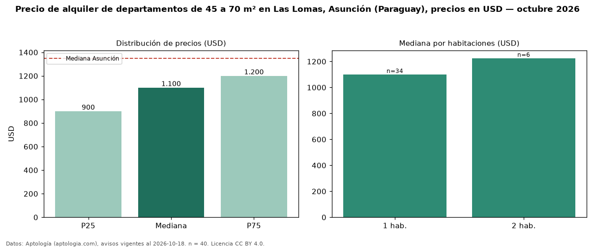

Precio de alquiler de departamentos de 45 a 70 m² en Las Lomas, Asunción (Paraguay), precios en USD — octubre 2026
USD 1.100 al mes es el canon mediano de departamentos de 45 a 70 m² en alquiler en Las Lomas, Asunción (Paraguay) (n = 40 avisos). Frente a la mediana de todos los departamentos en alquiler de Las Lomas (USD 1.300, n = 215), queda 15 % por debajo; este segmento reúne el 19 % de esos avisos. Por metro cuadrado, la mediana es USD 19,67/m² al mes (n = 39), 21 % por encima del conjunto de referencia (USD 16,24/m²). El área mediana anunciada es 54 m². El segmento con más oferta es el de 1 habitación (34 avisos, mediana USD 1.100); pasar de 1 habitación a 2 habitaciones cambia la mediana +11 %. La mediana de todos los departamentos en alquiler de Asunción es USD 1.350 (−19 % de diferencia). La mitad central de los avisos va de USD 900 a USD 1.200 (razón 1,3), una dispersión baja. Datos: Aptología (aptologia.com), CC BY 4.0 — https://www.aptologia.com/py/alquiler/asuncion/las-lomas. Archivos: PDF, CSV con las cifras y gráfica PNG.

| Avisos únicos | 40 |
|---|---|
| Percentil 25 | COP 900 |
| Mediana | COP 1.100 |
| Percentil 75 | COP 1.200 |
| Mediana por m² | COP 19 |
Fuente: avisos vigentes de portales inmobiliarios recopilados por Aptología, deduplicados (mínimo 30 avisos únicos por celda). Precios pedidos, no cerrados. Fecha: 2026-10-18.